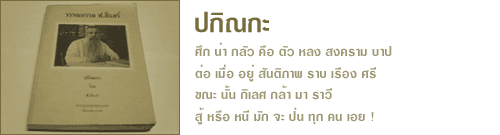

ชุด ปกิณกะ เป็นชุดที่รวบรวมวรรณกรรมของท่านเจษฎาจารย์ ฟ.ฮีแลร์ ในชุด เบ็ดเตล็ด ประกอบด้วย เรื่องแปล บทความ สารคดี เรื่องสั้น ตลอดจนคำประพันธ์ชนิดต่างๆ ส่วนใหญ่จะลงพิมพ์ในหนังสือ อัสสัมชัญอุโฆษสมัย ซึ่งท่านเป็นบรรณาธิการภาคไทย พิมพ์ตั้งแต่ ค.ศ. 1913 ถึง ค.ศ. 1941 ออกปีละ 4 เล่ม ท่านมีความสนุกกับอุโฆษสมัย เขียนทั้ง ร้อยแก้ว ร้อยกรองลงเนืองๆ ภายหลังเมื่อมีหนังสือ อุโฆษสาร หรือ Echoes ท่านก็พอใจ แต่เป็นของนักเรียนเขาทำกันเอง หาใช่ผลิตผลของท่าน แต่ท่านก็อุตส่าห์แต่งโคลงกลอนใหม่ๆให้บ้างเหมือนกัน
วรรณกรรมของท่าน เนื้อหาจะมุ่งเน้นให้ความรู้แฝงด้วยคติธรรม นอกจากนี้ ยังสะท้อนให้เห็นถึงความรักและความผูกพันที่ท่านมีต่อโรงเรียนและศิษย์อัสสัมชัญ จะเห็นได้จากจดหมายเหตุที่ท่านเขียนเมื่อครั้งต้องเดินทางกลับไปช่วยรักษาพยาบาลทหารบาดเจ็บในสงครามโลกที่ประเทศฝรั่งเศส เมื่อเดินทางไป ใช้หัวเรื่องว่า ข่าวไกลบ้าน และเมื่อเดินทางกลับประเทศไทย ท่านใช้หัวเรื่องว่า กลับบ้าน
หลักฐานที่แสดงถึงอัจฉริยภาพทางกวีของท่านประการสำคัญก็คือ ข้อเขียนของสุลักษณ์ ศิวรักษ์ ที่เขียนไว้ใน หนังสืออัสสัมชัญอุโฆษสมัย ฉบับที่ระลึก วันมรณภาพครบ 1 ปี ของท่านเจษฎาจารย์ ฟ. ฮีแลร์ พิมพ์เมื่อ พ.ศ. 2512 ตอนหนึ่งว่า ฝีปากในการแต่งหนังสือนั้น ท่านขึ้นชื่อลือชามาตั้งแต่สมัยรัชกาลที่ 6 แล้ว ด้วยเหตุนี้เมื่อตั้งวรรณคดีสมาคมขึ้นในรัชกาลที่ 7 สมเด็จกรมพระยาดำรงราชานุภาพ จึงโปรดให้เชิญท่านเจษฎาจารย์เข้าเป็นสมาชิกด้วย ดูเหมือนจะเป็นฝรั่งคนเดียวที่เป็นสมาชิกแห่งสมาคมอันมีเกียรตินี้
หนังสือชุดนี้ยังคงรูปแบบการใช้ภาษาตามต้นฉบับไว้ทุกประการ วรรณกรรมชุด ปกิณกะ จึงเป็นหนังสือที่ควรค่าแก่ศิษย์อัสสัมชัญ หรือผู้สนใจอ่านค้นคว้าและเก็บรักษาไว้